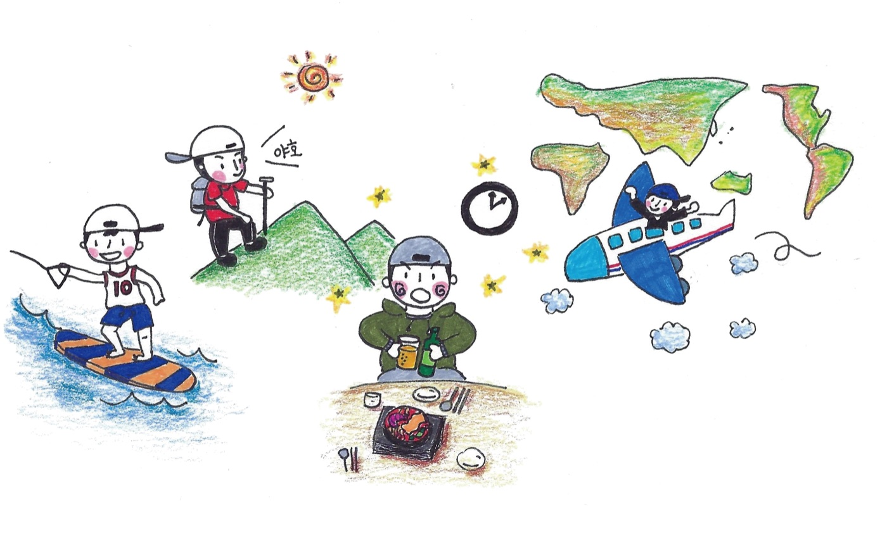
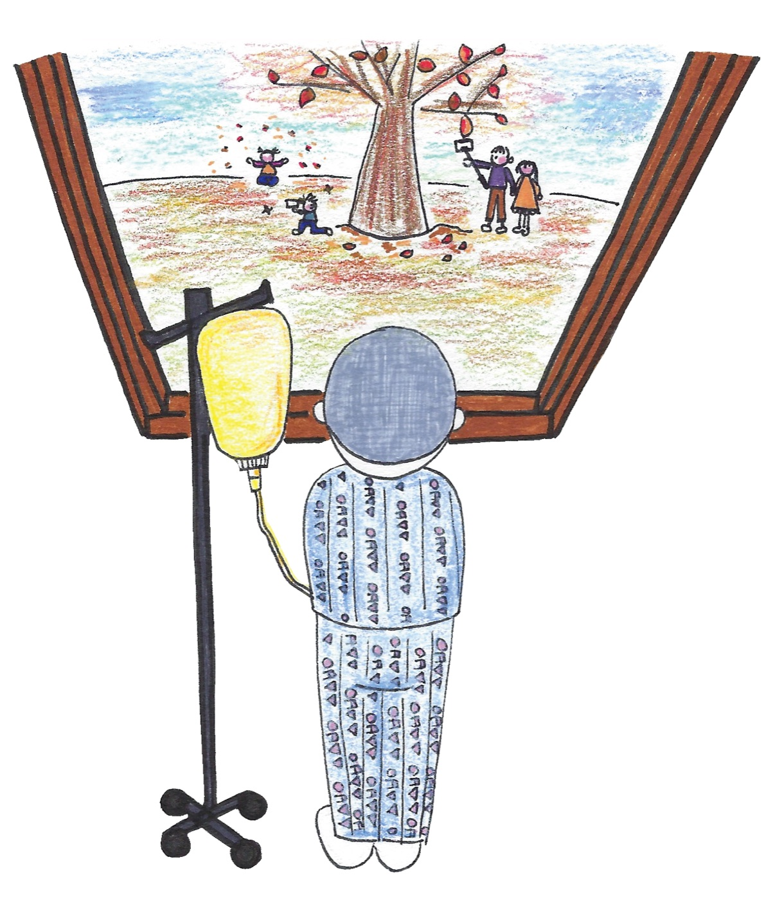

LETTERS
또봄 편지
계절마다 한 번, 네 번에 걸쳐 한 해를 돕니다.
또봄 로고의 네 네모는 여름 · 가을 · 겨울 · 봄입니다. 암은 한창인 여름에 갑자기 오고, 가을 내내 치료하고, 겨울이 가장 춥고, 그리고 봄이 옵니다.
편지도 같은 순서로 갑니다. 네 호를 모으면 한 해가 되고, 로고가 됩니다.
각 호의 그림은 2018년 여행 포토북 ‘당신을 또 봅니다’의 계절 챕터 삽화입니다. 그때 이미 이 순서로 그려 두었습니다.

갑자기 멈춰 선 계절 페루 마추픽추, 확진 후 30일 안에 챙길 산정특례와 연말정산 장애인 공제, 그리고 2025년에 후원금이 간 곳. 읽어보기 →
곁에 있는 사람들 병문안, 이렇게 해주세요. 무슨 말을 해야 할지 몰라 못 가게 되는 분들과 그 말에 상처받은 적 있는 분들 모두를 위한 호. 항암 중 식사와 탈모 관리. 준비 중 가장 추운 때
다시 일어선 사람의 이야기와 마음 돌보는 법, 심리 지원 제도.
12월에 열리는 Cheer UP 곧, 봄 무대 기록도 함께 담습니다.
준비 중
가장 추운 때
다시 일어선 사람의 이야기와 마음 돌보는 법, 심리 지원 제도.
12월에 열리는 Cheer UP 곧, 봄 무대 기록도 함께 담습니다.
준비 중
 다시, 봄
일상으로 돌아간 사람의 이야기. 그해 새로 열린 지원사업과 복직 · 재취업,
그리고 여름에 떠날 여행 프로젝트 참가자 모집.
준비 중
다시, 봄
일상으로 돌아간 사람의 이야기. 그해 새로 열린 지원사업과 복직 · 재취업,
그리고 여름에 떠날 여행 프로젝트 참가자 모집.
준비 중